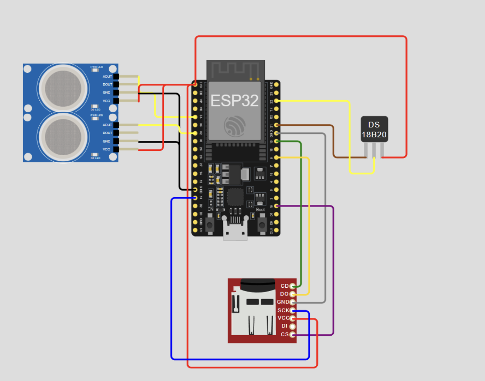
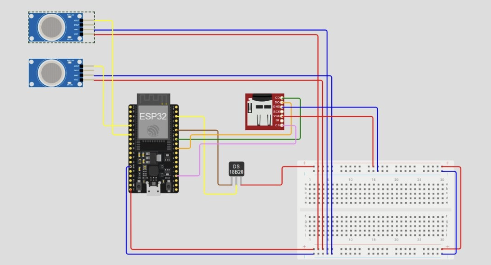

Home › RaspberryPi & Sensor Guide
The ESP32 and sensors serve to measure the pH, moisture, and temperature of each garden bed. The statistics should track the data to ensure each bed is at optimal status to grow crops.

